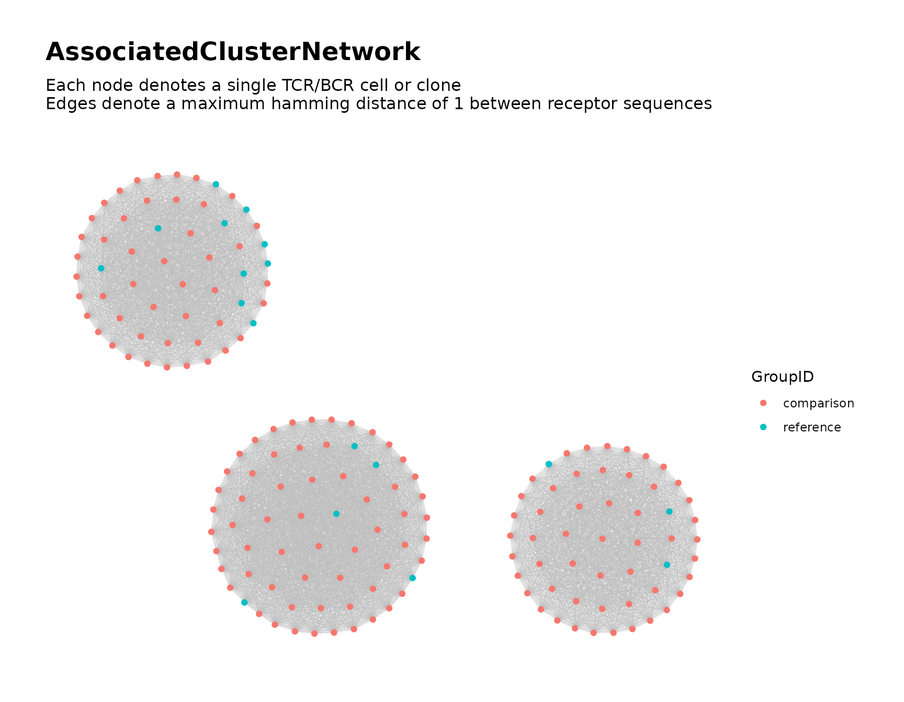
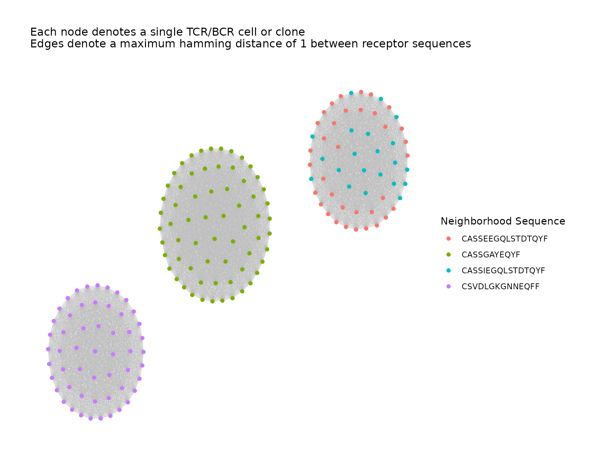
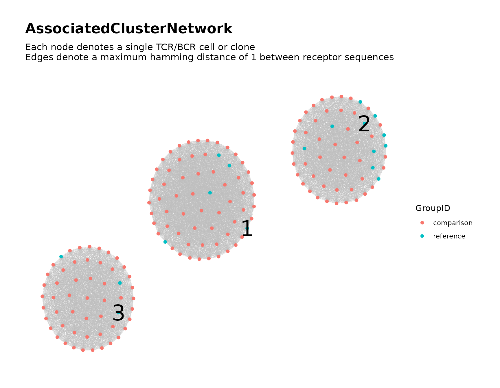
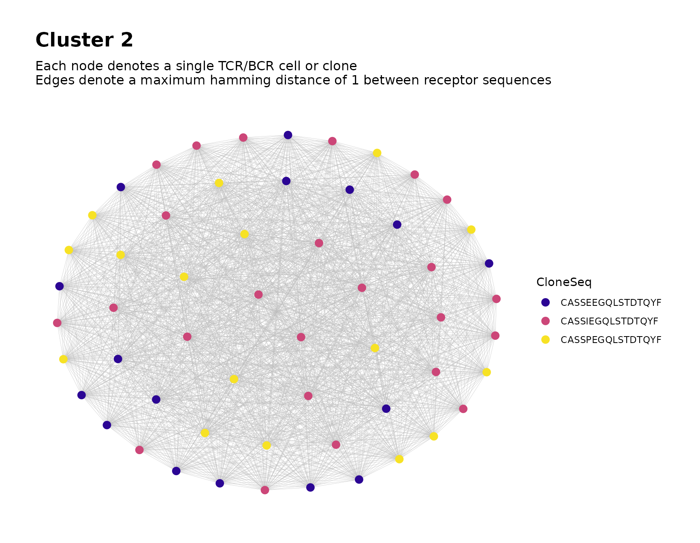
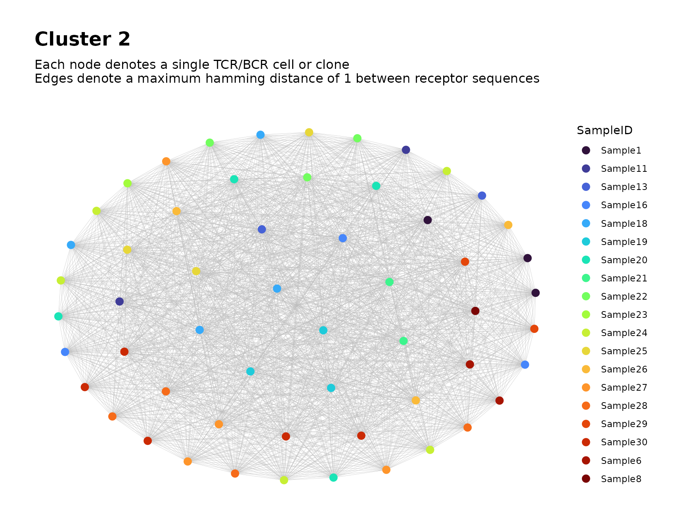

Searching for Associated TCR/BCR Clusters
Source:vignettes/associated_clusters.Rmd
associated_clusters.RmdIntroduction
Given multiple samples of bulk Adaptive Immune Receptor Repertoire
Sequencing (AIRR-Seq) data, the NAIR package can be used to
search for TCR/BCR clusters associated with a binary variable of
interest, such as a disease condition, treatment or clinical
outcome.
Overview of Process
- Identify associated sequences. Divide the subjects into two groups based on the two levels of the binary variable. Identify TCR/BCR sequences that exhibit a statistically significant difference in frequency between the two groups using Fisher’s exact test.
- Identify clones with sequences similar to the associated sequences. For a single associated sequence, all sequences that fall within a certain distance (e.g., those that differ by at most one amino acid) comprise its neighborhood. From all samples, identify all clones whose sequences belong to this neighborhood. Repeat for each associated sequence.
- Construct global network using identified clones. Combine the clones from step 2 into a single global network. Use cluster analysis to partition the global network into clusters, which are considered as the associated clusters.
- Perform additional tasks such as labeling the global clusters in the visual plot and analyzing individual clusters of interest.
Simulate Data for Demonstration
We simulate some toy data for demonstration.
As our binary variable of interest, we consider a single treatment factor with two levels, labeled treatment and control.
In each of the two groups, we simulate 15 samples, each containing 30 observations. The generation probabilities of the possible sequences are fixed within each group. In order to simulate the treatment effect, the generation probabilities of certain sequences differ substantially between the two groups.
set.seed(42)
library(NAIR)
#> Welcome to NAIR: Network Analysis of Immune Repertoire.
#> Get started using `vignette("NAIR", package = "NAIR")`, or by visiting
#> https://mlizhangx.github.io/Network-Analysis-for-Repertoire-Sequencing-/
data_dir <- tempdir()
dir_input_samples <- file.path(data_dir, "input_samples")
dir.create(dir_input_samples, showWarnings = FALSE)
# Number of samples by control/treatment group
n_control <- n_treatment <- 15
n_samples <- n_control + n_treatment
sample_size <- 30 # (seqs per sample)
# sequences (first five are chosen to be associated with treatment)
base_seqs <-
c("CASSGAYEQYF", "CSVDLGKGNNEQFF",
"CASSIEGQLSTDTQYF", # 3 of the associated
"CASSEEGQLSTDTQYF", # sequences differ by
"CASSPEGQLSTDTQYF", # only one amino acid
"RASSLAGNTEAFF", "CASSHRGTDTQYF", "CASDAGVFQPQHF"
)
# relative generation probabilities by control/treatment group
pgen_c <- matrix(rep(c(rep(1, 5), rep(30, 3)), times = n_control),
nrow = n_control, byrow = TRUE)
pgen_t <- matrix(rep(c(1, 1, rep(1/3, 3), rep(2, 3)), times = n_treatment),
nrow = n_treatment, byrow = TRUE)
pgen <- rbind(pgen_c, pgen_t)
simulateToyData(
samples = n_samples,
sample_size = sample_size,
prefix_length = 1,
prefix_chars = c("", ""),
prefix_probs = cbind(rep(1, n_samples), rep(0, n_samples)),
affixes = base_seqs,
affix_probs = pgen,
num_edits = 0,
output_dir = dir_input_samples,
no_return = TRUE
)
#> [1] TRUEEach sample’s data frame is saved to its own file using the RDS file
format. The files are named “Sample1.rds”,
“Sample2.rds”, etc. A character string containing the
directory path is assigned to the R environment variable
dir_input_samples for later reference.
The first few rows of the data for the first sample appear as follows:
# View first few rows of data for sample 1
head(readRDS(file.path(dir_input_samples, "Sample1.rds")))
#> CloneSeq CloneFrequency CloneCount SampleID
#> 1 CASDAGVFQPQHF 0.02606559 2832 Sample1
#> 2 CASDAGVFQPQHF 0.03718396 4040 Sample1
#> 3 CASSHRGTDTQYF 0.03182726 3458 Sample1
#> 4 CASDAGVFQPQHF 0.04615781 5015 Sample1
#> 5 RASSLAGNTEAFF 0.06006498 6526 Sample1
#> 6 CASDAGVFQPQHF 0.03363123 3654 Sample1Step 1: Find Associated Sequences
First, we use findAssociatedSeqs() to conduct a
systematic search for associated sequences within the provided
samples.
This search is a two-stage procedure.
The unique receptor sequences are first filtered according to basic criteria in order to narrow the list of candidates.
For each candidate sequence, we then perform Fisher’s exact test of independence between the binary variable of interest and the observed presence of the sequence within a sample/subject. Significant associations are identified based on a specified P-value threshold.
Below, we explain how to use findAssociatedSeqs().
Input Data for Step 1
Each sample’s AIRR-Seq data must be contained in a separate file, with observations indexed by row, and with the same columns across samples.
File Paths of Sample Data
The file_list parameter accepts a character vector
containing file paths (or a list containing file paths and connections),
where each element corresponds to a file containing a single sample.
File Format of Sample Data
The file format of the input files is specified by the
input_type parameter. The supported values are
"rds", "rda", "csv",
"csv2", "tsv" and "table".
Depending on the input type, further options are specified with
data_symbols or read.args.
Refer here
and to loadDataFromFileList() for details and examples.
Sequence Column in Sample Data
The seq_col parameter specifies the column containing
the TCR/BCR sequences within each sample. It accepts the column name (as
a character string) or the column position index.
Assigning Samples to Groups
The group_ids parameter assigns each sample to one of
two groups, representing the two levels of the binary variable of
interest. It accepts a vector of the same length as
file_list, where each entry is the group label for the
corresponding sample. Any two distinct values may be used for the group
labels.
Assigning Samples to Subjects (If Applicable)
The optional subject_ids parameter assigns each sample
to a subject. It accepts a vector of the same length as
file_list, where each entry is the subject ID for the
corresponding sample.
Without subjects, each sample is an independent observational unit. The contingency table for Fisher’s exact test then counts samples possessing the given sequence.
With subjects, all samples from the same subject form one observational unit. The contingency table then counts subjects possessing the given sequence. A sequence is counted at most once per subject, and each subject is counted exactly once in each margin.
Subject IDs should be provided when the binary variable of interest is subject-specific and the data contains multiple samples from a single subject.
Clone Frequency Column (Optional)
The optional freq_col parameter specifies the column
containing the clone frequencies (normalized measure of abundance)
within each sample. It accepts the column name (as a character string)
or the column position index. If provided, the maximum clone count
(across all samples) of each associated sequence will be included in the
output.
Search Criteria
The following parameters control the criteria used when searching for associated sequences. These include filter criteria that determine which sequences are considered for testing, as well as the P-value cutoff below which an association is detected by Fisher’s exact test.
Sample Membership
By default, only sequences that appear in at least five samples will
be considered. This can be changed by setting the
min_sample_membership parameter to a different value. An
argument value of NULL bypasses this check.
Sequence Length
By default, only sequences with a length of at least seven characters
will be considered. This can be changed by setting the
min_seq_length parameter to a different value. An argument
value of NULL bypasses this check.
Sequence Content
Sequences containing any of the characters *,
| or _ will be excluded from consideration.
This can be changed using the drop_matches parameter, which
accepts a character string containing a regular expression that
specifies a pattern of content to search for. Each sequence is checked
for a pattern match using grep(). If a match is found, the
sequence is excluded. An argument value of NULL bypasses
this check.
P-value Cutoff
By default, sequences with a P-value below 0.05 on Fisher’s exact
test are included in the output of findAssociatedSeqs().
The cutoff can be set to a different value using the
pval_cutoff parameter. The lower the cutoff value, the
stronger the evidence of an association is required for a sequence to be
included in the output.
It should be noted that the output includes the P-value for each
associated sequence; furthermore, the sequences are ordered by P-value,
and any subset of them can be used in step2. Thus
it is not necessary to rerun findAssociatedSeqs() in order
to impose a stricter P-value cutoff. The user can instead subset the
results in order to use only those sequences below a specified
P-value.
Output Settings for Step 1
findAssociatedSeqs() returns a data frame (see
demonstration below). The data frame can be written to a csv file by
providing a file path to the outfile parameter.
Demonstration, Step 1
associated_seqs <- findAssociatedSeqs(file_list = input_files,
input_type = "rds",
group_ids = group_labels,
seq_col = "CloneSeq",
min_seq_length = NULL,
drop_matches = NULL,
min_sample_membership = NULL,
pval_cutoff = 0.1
)findAssociatedSeqs() returns a data frame containing the
associated sequences based on the specified search criteria.
associated_seqs[, 1:5]
#> ReceptorSeq fisher_pvalue shared_by_n_samples samples_g0 samples_g1
#> 8 CSVDLGKGNNEQFF 1.052106e-05 18 3 15
#> 7 CASSGAYEQYF 1.157316e-04 17 3 14
#> 4 CASSEEGQLSTDTQYF 5.197401e-03 10 1 9
#> 5 CASSIEGQLSTDTQYF 6.559548e-02 16 5 11Each row corresponds to a unique receptor sequence. The rows are ordered by \(P\)-value.
For the remaining steps, we will only need to use the
ReceptorSeq column. The documentation for
findAssociatedSeqs() describes the other variables.
Step 2: Find Associated Clones
findAssociatedClones() searches across samples and
identifies clones with sequences similar to any of the associated
sequences identified in step 1.
For each associated sequence, we define its neighborhood as the collection of all sequences that fall within a specified distance (e.g., a maximum Hamming distance of 1). We then identify the clones (from all samples) whose sequences belong to this neighborhood.
Associated Sequences
The assoc_seqs parameter specifies the associated
sequences. It accepts a character vector, which is typically the
ReceptorSeq column from the output of
findAssociatedSeqs(), or a subset of this column if not all
associated sequences from step 1 are to be considered (the column is
ordered by P-value to facilitate subsetting).
Input Data for Step 2
Argument Values from Step 1
With findAssociatedClones(), we specify our sample data
using the same parameters from findAssociatedSeqs():
file_listinput_typeseq_colgroup_ids-
subject_ids(if applicable)
The user should provide the same argument values used in the call to
findAssociatedSeqs() during step
1.
Custom Sample IDs (Optional)
Each clone’s sample ID is included in the output. By default, these
are "Sample1", "Sample2", etc., according to
the order in file_list.
The optional sample_ids parameter assigns custom sample
IDs. It accepts a vector of the same length as file_list,
where each entry is the corresponding sample ID.
Filtering the Sample Data
The clones from each sample are filtered to remove any irrelevant
data. By default, clones with sequences that are less than six
characters in length, as well as sequences containing any of the
characters *, _ or |, will be
excluded. The min_seq_length and drop_matches
parameters control the filter settings. Refer here
for details.
Defining the Neighborhoods
The neighborhood of an associated sequence includes all sequences that are sufficiently similar to it. By default, similarity is measured using the Hamming distance, and “sufficiently similar” means a Hamming distance of at most 1.
The Levenshtein
distance can be used by specifying dist_type = "lev".
As described here,
it is preferable for comparing nucleotide sequences, but has greater
computational cost.
The maximum distance between an associated sequence other sequences
in its neighborhood is specified by the nbd_radius
parameter (the default is 1). Increasing the value increases the
potential number of clones in each neighborhood. A value of 0 means each
neighborhood includes only clones with the exact associated
sequence.
Output Settings for Step 2
findAssociatedClones() does not return any direct
output. Instead, the AIRR-Seq data for the neighborhoods is saved to
files to be used as inputs in step 3. The following
parameters control the output settings.
Variables to Keep From Sample Data
By default, each neighborhood’s AIRR-Seq data includes all variables from the original sample data. These variables can be used as metadata in visualizations of the global network in step 3.
To keep only a subset of the original variables, specify the
variables to keep using the subset_cols parameter, which
accepts a character vector of column names or a vector of column
indices. The sequence column is always included.
Output Directory for Step 2
The output_dir parameter specifies the output directory.
It accepts a character string containing the directory path. The
directory will be created if it does not exist.
# output directory for current step
dir_nbds <- file.path(data_dir, "assoc_seq_nbds")Using an empty directory simplifies the task of inputting the files during step 3.
Output File Format for Step 2
By default, each neighborhood’s data frame is saved as an RDS file.
This can be changed using the output_type parameter. Other
accepted values are "rda", "csv",
"csv2", "tsv" and "table". For
"rda", data frames are named data in the R
environment. For the remaining options, write.table() is
called with row.names = TRUE.
Demonstration, Step 2
# Identify clones in a neighborhood around each associated sequence
findAssociatedClones(file_list = input_files,
input_type = "rds",
group_ids = group_labels,
seq_col = "CloneSeq",
assoc_seqs = associated_seqs$ReceptorSeq,
min_seq_length = NULL,
drop_matches = NULL,
output_dir = dir_nbds
)The following files are created in the output directory:
# Files created by findAssociatedClones()
list.files(dir_nbds)
#> [1] "assoc_nbd_1_CSVDLGKGNNEQFF.rds" "assoc_nbd_2_CASSGAYEQYF.rds"
#> [3] "assoc_nbd_3_CASSEEGQLSTDTQYF.rds" "assoc_nbd_4_CASSIEGQLSTDTQYF.rds"Each file contains neighborhood data for a single associated sequence.
# first neighborhood data file
one_nbd <- readRDS(list.files(dir_nbds, full.names = TRUE)[[1]])
# first few rows
head(one_nbd)
#> CloneSeq CloneFrequency CloneCount SampleID GroupID
#> Sample5.14 CSVDLGKGNNEQFF 0.02668662 2924 Sample5 reference
#> Sample7.17 CSVDLGKGNNEQFF 0.01957279 2113 Sample7 reference
#> Sample10.17 CSVDLGKGNNEQFF 0.03594648 4097 Sample10 reference
#> Sample16.10 CSVDLGKGNNEQFF 0.03404553 3802 Sample16 comparison
#> Sample16.28 CSVDLGKGNNEQFF 0.02736537 3056 Sample16 comparison
#> Sample17.3 CSVDLGKGNNEQFF 0.04114818 4603 Sample17 comparison
#> AssocSeq
#> Sample5.14 CSVDLGKGNNEQFF
#> Sample7.17 CSVDLGKGNNEQFF
#> Sample10.17 CSVDLGKGNNEQFF
#> Sample16.10 CSVDLGKGNNEQFF
#> Sample16.28 CSVDLGKGNNEQFF
#> Sample17.3 CSVDLGKGNNEQFFThe row names identify the sample and original row of each clone.
In addition to the variables kept from the original data, the following variables have been added:
SampleIDGroupID-
AssocSeq(the associated sequence for the neighborhood)
If subject_ids was specified, a variable
SubjectID will also be present.
Step 3: Global Network of Associated Clusters
buildAssociatedClusterNetwork() combines the clones from
all neighborhoods into a single global network. Cluster analysis is used
to partition the global network into clusters, which are considered as
the associated clusters.
Input Data for Step 3
The input files for buildAssociatedClusterNetwork() are
the output files from step 2. Each file contains
the AIRR-Seq data for the clones belonging to a particular
neighborhood.
File Paths of Neighborhood Data
As in previous steps, the file_list parameter specifies
the input files, which are located in the output
directory from step 2. If an empty output directory was used, they
can be easily referenced using list.files().
# Create vector of file paths to files from step 2
nbd_files <- list.files(dir_nbds, full.names = TRUE)File Format of Neighborhood Data
If findAssociatedClones() was called with a non-default
value of output_type, this value must be passed to the
input_type parameter of
buildAssociatedClusterNetwork().
Global Network Analysis
Network Construction
The parameters that control construction of the global network are shown below along with their default values.
dist_type = "hamming"dist_cutoff = 1drop_isolated_nodes = FALSE
Refer here for their meaning and usage.
Clustering Algorithm
A clustering algorithm is used to partition the global network graph into densely-connected subgraphs (clusters). Each cluster represents a distinct group of clones that are associated with the binary variable of interest.
By default, clustering is performed using
igraph::cluster_fast_greedy(). A different algorithm can be
specified using the cluster_fun parameter, as described here.
Network Properties
By default, buildAssociatedClusterNetwork() computes node-level
and cluster-level
properties of the global network. These can be excluded by setting
node_stats = FALSE and cluster_stats = FALSE,
respectively. The set of node-level properties to be computed can be
specified using the stats_to_include parameter, as
described here.
Visualization of Global Network
By default, buildAssociatedClusterNetwork() produces a
visual plot of the global network graph with the nodes colored according
to the binary variable of interest.
The color_nodes_by parameter specifies the variable used
to color the nodes. It accepts a character string naming a variable present in the neighborhood data (e.g.,
"SampleID") or a computed node-level property
(e.g., "degree").
color_nodes_by also accepts a vector naming multiple
variables. One
plot will be created for each entry, with the nodes colored according to
the respective variable. The name of the binary variable of interest
is "GroupID".
Refer here to learn about other parameters for customizing the visualization.
Output Settings for Step 3
buildAssociatedClusterNetwork() returns a list
containing plots, metadata and other network objects, with the same
structure as the output of buildRepSeqNetwork().
The output can be saved to a local directory using the parameters
output_dir, output_type and
output_name, whose usage is described here.
Demonstration, Step 3
# Combine neighborhoods and perform network analysis
all_clusters <-
buildAssociatedClusterNetwork(
file_list = nbd_files,
seq_col = "CloneSeq",
size_nodes_by = 1.5,
print_plots = TRUE
)
The returned list contains the following elements:
names(all_clusters)
#> [1] "details" "igraph" "adjacency_matrix" "node_data"
#> [5] "cluster_data" "plots"The elements are described here. We inspect the node metadata and cluster metadata.
Node Metadata for Global Network
The list element node_data is a data frame containing
metadata for the network nodes, where each row represents a distinct
clone corresponding to a node in the global network graph.
head(all_clusters$node_data[, 1:8])
#> CloneSeq CloneFrequency CloneCount SampleID GroupID
#> Sample5.14 CSVDLGKGNNEQFF 0.02668662 2924 Sample5 reference
#> Sample7.17 CSVDLGKGNNEQFF 0.01957279 2113 Sample7 reference
#> Sample10.17 CSVDLGKGNNEQFF 0.03594648 4097 Sample10 reference
#> Sample16.10 CSVDLGKGNNEQFF 0.03404553 3802 Sample16 comparison
#> Sample16.28 CSVDLGKGNNEQFF 0.02736537 3056 Sample16 comparison
#> Sample17.3 CSVDLGKGNNEQFF 0.04114818 4603 Sample17 comparison
#> AssocSeq degree cluster_id
#> Sample5.14 CSVDLGKGNNEQFF 53 3
#> Sample7.17 CSVDLGKGNNEQFF 53 3
#> Sample10.17 CSVDLGKGNNEQFF 53 3
#> Sample16.10 CSVDLGKGNNEQFF 53 3
#> Sample16.28 CSVDLGKGNNEQFF 53 3
#> Sample17.3 CSVDLGKGNNEQFF 53 3The row names identify the sample and original row of each clone.
# variables in the node metadata
names(all_clusters$node_data)
#> [1] "CloneSeq" "CloneFrequency"
#> [3] "CloneCount" "SampleID"
#> [5] "GroupID" "AssocSeq"
#> [7] "degree" "cluster_id"
#> [9] "transitivity" "eigen_centrality"
#> [11] "centrality_by_eigen" "betweenness"
#> [13] "centrality_by_betweenness" "authority_score"
#> [15] "coreness" "page_rank"By default, all variables from the original sample data are present. Node-level network properties are also present, which are described here.
Cluster Metadata for Global Network
The list element cluster_data is a data frame containing
metadata for the associated clusters, where each row corresponds to a
cluster in the global network. It contains the following variables:
# variables in the cluster metadata
names(all_clusters$cluster_data)
#> [1] "cluster_id" "node_count"
#> [3] "mean_seq_length" "mean_degree"
#> [5] "max_degree" "seq_w_max_degree"
#> [7] "agg_count" "max_count"
#> [9] "seq_w_max_count" "diameter_length"
#> [11] "global_transitivity" "assortativity"
#> [13] "edge_density" "degree_centrality_index"
#> [15] "closeness_centrality_index" "eigen_centrality_index"
#> [17] "eigen_centrality_eigenvalue"These cluster properties are described here.
Step 4: Additional Tasks
After calling buildAssociatedClusterNetwork(), the
following tasks can be performed using the returned output.
Additional Plots
We may wish to generate additional plots of the global network graph,
coloring the nodes according to different metadata to gain further
insight into the associated clusters. This can be done using
addPlots() as described here.
# global network plot, nodes colored by associated sequence
all_clusters <- addPlots(all_clusters,
color_nodes_by = "AssocSeq",
color_title = "Neighborhood Sequence",
size_nodes_by = 1.5,
print_plots = TRUE
)
In the cluster on the right, we notice that the neighborhoods for two similar associated sequences were grouped into a single cluster.
Labeling the Global Clusters
In order to more easily cross-reference the clusters in the visual plot with the clusters in the data, we can label the clusters with their ID numbers.
This is accomplished using the labelClusters() function
as described here.
all_clusters <- labelClusters(all_clusters, size = 10)
all_clusters$plots[[1]]
#> Warning: Removed 172 rows containing missing values (`geom_text()`).
Focusing on Individual Clusters
To focus on a particular cluster, we can subset the node metadata
based on the value of cluster_id and use
buildNet() to produce plots of the cluster’s graph.
# focus on the second cluster
buildNet(
data = all_clusters$node_data[all_clusters$node_data$cluster_id == 2, ],
seq_col = "CloneSeq",
color_nodes_by = c("CloneSeq", "SampleID"),
color_scheme = c("plasma", "turbo"),
size_nodes_by = 3,
plot_title = "Cluster 2",
print_plots = TRUE
)